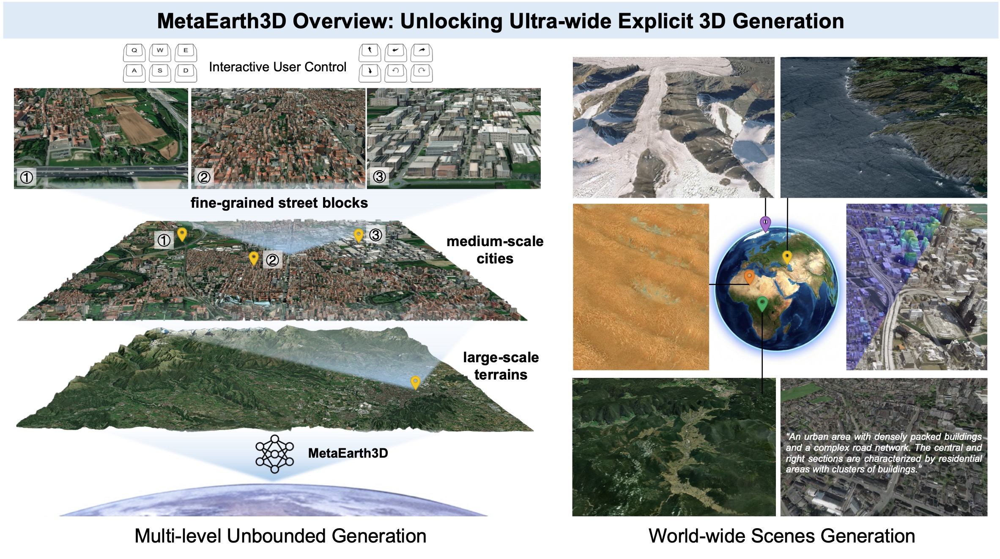
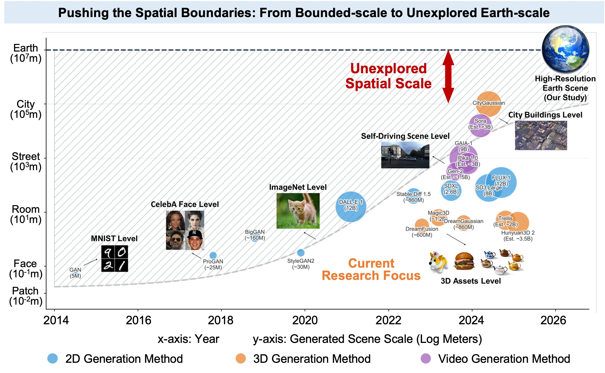
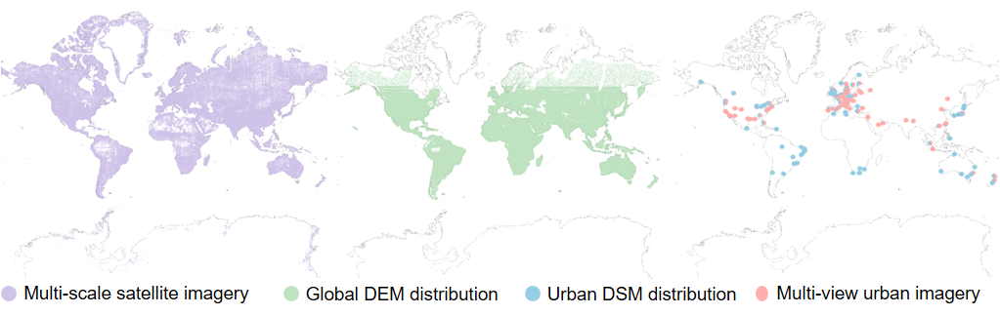
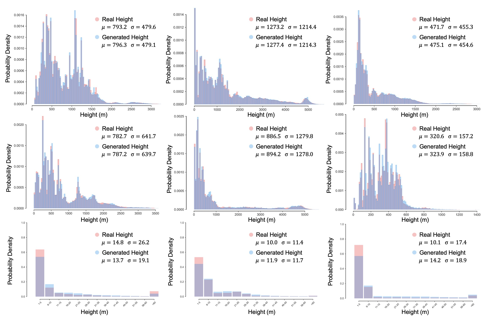
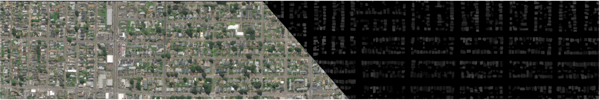
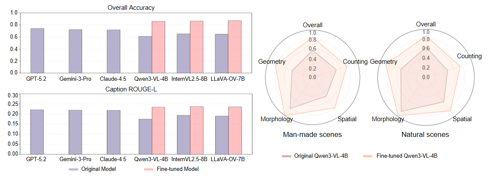

MetaEarth3D extends the spatial boundaries of generative foundation models, enabling the generation of multi-level, unbounded, and diverse 3D scenes with explicit mesh representations at world scale.
Recent generative AI models have achieved remarkable breakthroughs in language and visual understanding. However, although these models can generate realistic visual content, their spatial scale remains confined to bounded environments, preventing them from capturing how geographic environments evolve across thousands of kilometers or from modeling the spatial structure of the large-scale physical world. This limitation poses a critical challenge for ultra-wide-area spatial intelligence in Earth observation and simulation, revealing a deeper gap in generative AI: progress has relied primarily on scaling model parameters and training data, while overlooking spatial scale as a core dimension of intelligence. Here, motivated by this missing dimension, we investigate spatial scale as a new scaling axis in foundation models and present MetaEarth3D, the first generative foundation model capable of spatially consistent generation at planetary scale. Taking optical Earth observation simulation as a testbed, MetaEarth3D enables the generation of multi-level, unbounded, and diverse 3D scenes spanning large-scale terrains, medium-scale cities, and fine-grained street blocks. Built upon 10 million globally distributed real-world training images, MetaEarth3D demonstrates both strong visual realism and geospatial statistical realism. Beyond generation, MetaEarth3D serves as a generative data engine for diverse virtual environments in ultra-wide spatial intelligence. We argue that this study may help empower next-generation spatial intelligence for Earth observation.
Background
Despite the substantial progress achieved in scaling generative foundation models in terms of parameters, data, and modality diversity, far less attention has been paid to scaling them along the spatial dimension. Existing 3D generative models and so-called world models largely remain confined to object-level, indoor-level, or localized street-view scenes.

Chronological evolution of generative models across spatial scales. Circle size and color denote model scale (parameters/data) and generation modality.
Method Overview
We develop MetaEarth3D, which reformulates ultra-wide 3D scene generation as a progressive transition of probability distributions through coupled scale and dimensional space, effectively transforming intractable 3D generation tasks into a set of tractable 2D generative learning tasks.

The overall progressive probabilistic generative framework for ultra-wide 3D scene generation. The generation process is divided into scale space transition and dimensional space lifting.
10M GLOBAL-SCALE TRAINING DATA
To enable global-scale and multi-level 3D scene generation, we constructed a large-scale dataset comprising approximately 10 million images. The dataset consists of three complementary components: multi-scale satellite imagery, geo-aligned elevation maps, and multi-view urban imagery.

The global distribution of dataset supporting MetaEarth3D training and testing.
World-scale 3D Scenes Generation
Conditioned on flexible multi-modal inputs, MetaEarth3D generates realistic scenes across the globe with distinct regional characteristics, including mountains, deserts, snowfields, coastlines, and urban areas.
Comprehensive evaluations by both domain experts and Multimodal Large Language Models (MLLMs) demonstrate that MetaEarth3D significantly outperforms existing baselines in visual realism, diversity, and view consistency. Our MetaEarth3D maintains high structural fidelity while successfully scaling 3D scene generation to unprecedented spatial extents.

The chart on the left details human expert evaluation results, where domain experts assessed generation quality across five dimensions: perceptual quality, 3D realism, diversity, view consistency, and spatial scale. All scores are on a 5-point scale, with 5 indicating the best. The chart on the right presents the corresponding evaluation results assessed by Multimodal Large Language Models (MLLMs).
Multi-level and Statistically Realistic Generation
MetaEarth3D enables the creation of unified scenes across multiple observational levels within a single framework. It generates cross-scale scenes that maintain semantic coherence, encompassing macro-scale terrains down to fine-grained street blocks.
Multi-level generation: from macro-scale terrains (left) to fine-grained city blocks (right).
Beyond visual fidelity, MetaEarth3D successfully captures the intrinsic correlation between semantic categories and physical geometry, statistically mirroring real-world topographies across the globe.

Statistical comparison of generated versus real height maps across diverse continents and scenes. Subpanels (arranged left to right, top to bottom) display terrain elevations for Africa, Asia, Europe, North America, South America, Oceania, followed by height distributions of artificial structures in Asia, Europe and North America. The high degree of overlap (gray regions) indicates the model's capability to generate statistically realistic height maps consistent with real-world geostatistics.
Unbounded, Explicit 3D Scenes Generation
By reformulating the representation for large-scale scene generation via a designed unbounded generation strategy, MetaEarth3D enables the creation of continuous, and spatially consistent 3D meshes.

A representative sample demonstrating the pixel-wise alignment between the continuous, unbounded generated high-resolution RGB imagery (left) and its corresponding generated structural depth map (right).
Simultaneous view of diverse unbounded generation results.
Unlocks Interactive, Continuous Observation
Generating an unbounded and physically explicit 3D scene unlocks the capability for infinite, user-defined navigation. Throughout long-range navigation, features remain continuous across different viewpoints.
Continuous navigation and observation across diverse generated 3D environments.
MetaEarth3D as a Generative Data Engine
MetaEarth3D generates explicit 3D meshes enriched with self-labeled native 3D annotations, making it readily amenable to deployment as a generative data engine for Earth observation and intelligent aerospace platforms.
We fine-tuned open-source 2D vision-language models with the synthesized dataset and tested them on real-world UAV scenes, observing an average improvement of +22.85% across five typical geospatial understanding tasks.

The bar charts (left) show a quantitative comparison of spatial reasoning performance, highlighting the consistent improvements observed in open-source models after fine-tuning on MetaEarth3D compared with their original versions (proprietary closed-source models are included for reference). The radar charts (right) illustrate a multidimensional analysis, showing significant improvements of the fine-tuned Qwen3-VL-4B over the baseline across five dimensions in both man-made and natural scenes.
Citation
@article{YourPaperKey2026,
title={Spatially Scalable Generative Modeling for World-scale 3D Scenes},
author={Cao, Jinqi and Yu, Zhiping and Lin, Baihong and Liu, Chenyang and Shi, Zhenwei and Zou, Zhengxia},
journal={Conference/Journal Name},
year={2026},
url={https://your-domain.com/your-project-page}
}